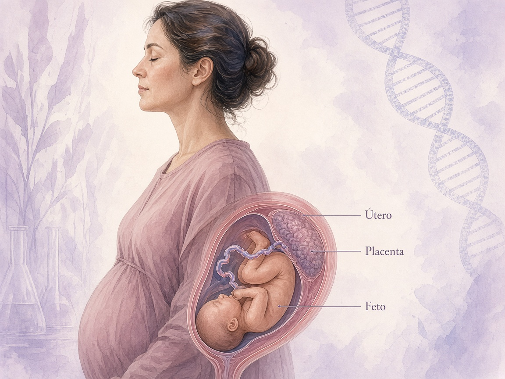
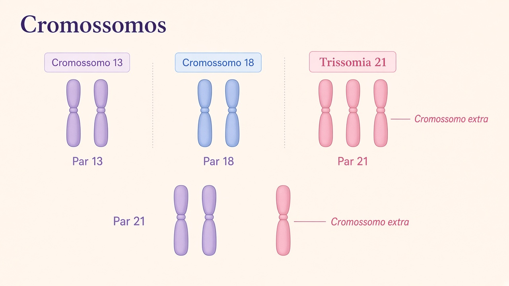
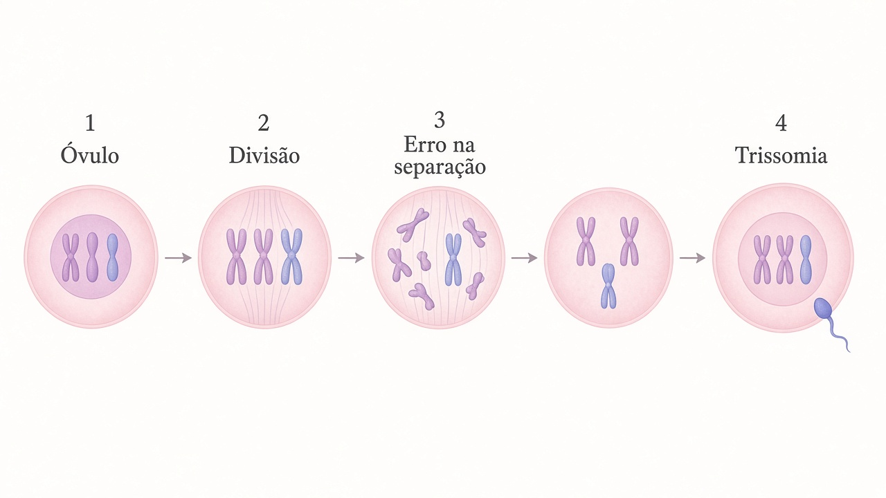

Projeto educativo de Ciências
Gestação após os 40 anos
Ciência, desenvolvimento do bebê e saúde materna. Um olhar organizado sobre o que muda com a idade, o que o pré-natal pode acompanhar e como uma gestação pode transcorrer de forma saudável.
Conteúdo educativo. Não substitui orientação médica.

Útero · Placenta · Feto
Fundamento científico
O que é gestação em idade materna avançada
Idade materna avançada é um conceito clínico, não um julgamento. Serve para organizar o acompanhamento, porque algumas condições se tornam mais frequentes com o passar dos anos.
35+
Por que 35 anos é a referência
Sociedades médicas, como o American College of Obstetricians and Gynecologists (ACOG), consideram idade materna avançada a partir de 35 anos no momento do parto. Essa faixa foi adotada historicamente porque, a partir dela, o risco de aneuploidias e de algumas intercorrências obstétricas passa a subir de modo mais evidente nas estatísticas populacionais.
O número 35 não é uma fronteira biológica rígida. É um ponto de corte útil para pesquisa e para o planejamento do pré-natal.
40+
O que muda aos 40 e após os 45
Aos 40 anos, a reserva ovariana já é menor, a chance de conceber sem tratamento tende a cair e a probabilidade de hipertensão, diabetes gestacional e alterações cromossômicas é maior do que aos 30. Isso descreve grupos, não cada pessoa.
Após os 45 anos, esses riscos continuam aumentando. Ainda assim, com avaliação clínica, controle de doenças prévias e pré-natal especializado, muitas mulheres têm gestações saudáveis.
A idade é apenas um dos fatores
O desfecho de uma gravidez também depende de hipertensão prévia, diabetes, obesidade, tabagismo, gestações múltiplas, histórico obstétrico, acesso ao cuidado e hábitos. Uma mulher de 41 anos sem outras doenças pode ter risco diferente de uma mulher mais jovem com várias comorbidades. Por isso o acompanhamento é individualizado.
Embriologia e obstetrícia
Desenvolvimento do bebê
Clique em cada período para ver tamanho aproximado, órgãos, cérebro, movimentos, sistemas e placenta. Os valores de tamanho são médias educativas; cada gestação varia.
Fisiologia materna
O que acontece com o corpo da mulher
A gravidez é um estado de adaptações profundas. Essas mudanças existem em qualquer idade; em mulheres mais velhas, o organismo pode ter menos reserva para enfrentá-las se já houver hipertensão, diabetes ou doença cardíaca.
H
Hormônios
hCG, progesterona, estrógenos, relaxina e lactogênio placentário sustentam a gravidez, relaxam a musculatura lisa, preparam as mamas e alteram o metabolismo. Náuseas, sono e mudanças de humor no início estão ligados a esse ambiente hormonal.
♥
Sistema cardiovascular
O volume sanguíneo aumenta cerca de 40% a 50%. O débito cardíaco sobe para irrigar útero e placenta. É comum a frequência cardíaca ficar um pouco mais alta. Edema leve nas pernas pode ocorrer pelo retorno venoso mais difícil.
BP
Pressão arterial
No segundo trimestre a pressão pode cair um pouco pela vasodilatação. No terceiro, tende a se aproximar dos valores pré-gestacionais. Elevação persistente precisa de avaliação, especialmente após os 40 anos, quando hipertensão gestacional e pré-eclâmpsia são mais frequentes.
M
Metabolismo
A gravidez é um estado de resistência fisiológica à insulina, para poupar glicose para o feto. Por isso o diabetes gestacional pode aparecer, sobretudo se já houver predisposição. O ganho de peso recomendado depende do IMC inicial e deve ser orientado no pré-natal.
P
Placenta
A placenta é um órgão temporário de troca de oxigênio, nutrientes e anticorpos, e também uma glândula endócrina. Com a idade, aumentam as chances de inserção baixa (placenta prévia) e de insuficiência placentária, o que justifica ultrassons e controle do crescimento fetal.
U
Útero e organismo
O útero cresce de um órgão pélvico a um órgão abdominal. Diafragma se eleva, a capacidade residual pulmonar muda e pode haver falta de ar aos esforços. Rins filtram mais sangue, e o estômago esvazia mais devagar. Tudo isso é adaptação, mas sintomas intensos merecem cuidado profissional.
Saúde da gestante
Riscos para a saúde da mulher
Estes cartões descrevem condições que se tornam mais possíveis com a idade materna avançada. Não significam que a mulher necessariamente as terá.
- O que é
- Pressão arterial elevada que surge após 20 semanas, sem proteinúria ou sinais de pré-eclâmpsia.
- Por que pode acontecer
- Os vasos maternos precisam se adaptar ao aumento de volume. Idade, obesidade e hipertensão prévia elevam a chance de falha nessa adaptação.
- Como pode ser acompanhado
- Medição regular da pressão nas consultas e, se indicado, em casa, com metas definidas pela equipe.
- Quando procurar atendimento
- Pressão persistentemente alta, dor de cabeça intensa, alterações visuais ou dor no estômago.
- O que é
- Distúrbio hipertensivo da gravidez que pode afetar rins, fígado, cérebro e placenta.
- Por que pode acontecer
- Envolve implantação placentária e resposta inflamatória materna. Idade avançada é um dos fatores de risco reconhecidos pelo ACOG e pelo Ministério da Saúde.
- Como pode ser acompanhado
- Pressão, proteinúria, exames de sangue e ultrassom do crescimento fetal. Em alguns casos, ácido acetilsalicílico em baixa dose é indicado pela equipe, nunca por conta própria.
- Quando procurar atendimento
- Dor de cabeça forte, fosfenos, edema súbito, dor em hipocôndrio direito, falta de ar ou diminuição dos movimentos fetais.
- O que é
- Intolerância à glicose diagnosticada na gravidez.
- Por que pode acontecer
- Hormônios placentários aumentam a resistência à insulina. Idade, história familiar e excesso de peso elevam o risco.
- Como pode ser acompanhado
- Rastreamento com glicemia e teste oral de tolerância à glicose, alimentação orientada e, se preciso, insulina.
- Quando procurar atendimento
- Sede intensa, muita urina, visão turva ou valores de glicemia muito alterados conforme a orientação recebida.
- O que é
- A placenta se insere total ou parcialmente sobre o colo do útero.
- Por que pode acontecer
- Mais comum em idades avançadas, cesáreas anteriores e gestações múltiplas.
- Como pode ser acompanhado
- Ultrassonografia. Muitas inserções baixas do segundo trimestre sobem com o crescimento uterino.
- Quando procurar atendimento
- Sangramento vermelho vivo, em geral indolor, é urgência obstétrica.
- O que é
- Separação da placenta da parede uterina antes do nascimento.
- Por que pode acontecer
- Associado a hipertensão, trauma, tabagismo e, em parte, à idade materna.
- Como pode ser acompanhado
- Controle rigoroso da pressão e vigilância de sangramento e dor.
- Quando procurar atendimento
- Dor uterina intensa, sangramento e abdome endurecido exigem atendimento imediato.
- O que é
- Perda sanguínea importante na gravidez ou no parto, incluindo hemorragia pós-parto.
- Por que pode acontecer
- Placenta prévia, descolamento, atonia uterina e distúrbios de coagulação. Cesárea e idade avançada estão entre os fatores estudados.
- Como pode ser acompanhado
- Pré-natal com hemograma, planejamento do parto em local com suporte e correção de anemia.
- Quando procurar atendimento
- Qualquer sangramento na gravidez deve ser avaliado. Tontura, palidez e desmaio são sinais de urgência.
- O que é
- Nascimento antes de 37 semanas.
- Por que pode acontecer
- Pode ser espontâneo ou indicado por pré-eclâmpsia, restrição de crescimento ou outras intercorrências, mais comuns após os 40 anos.
- Como pode ser acompanhado
- Medida do colo uterino, controle de infecções e das doenças maternas, conforme indicação.
- Quando procurar atendimento
- Contrações regulares, perda de líquido, pressão pélvica ou sangramento.
- O que é
- Descompensação cardíaca, arritmias ou eventos hipertensivos graves durante a gravidez ou o puerpério.
- Por que pode acontecer
- O coração trabalha mais. Se já existir hipertensão, obesidade ou doença cardíaca, a reserva é menor.
- Como pode ser acompanhado
- Avaliação clínica, pressão, e, se necessário, cardiologista e exames complementares.
- Quando procurar atendimento
- Falta de ar em repouso, dor no peito, desmaio ou inchaço súbito.
Saúde fetal
Riscos para o bebê
O pré-natal de qualidade busca identificar precocemente essas possibilidades. A maioria das gestações após os 40 resulta em recém-nascidos sem as complicações abaixo.
- O que é
- Nascimento antes de 37 semanas completas.
- Por que pode acontecer
- Doenças maternas, gestações múltiplas e indicação médica de antecipar o parto.
- Como pode ser acompanhado
- Consultas regulares, ultrassom e, se preciso, corticoide antenatal indicado pela equipe.
- Quando procurar atendimento
- Sinais de trabalho de parto precoce ou perda de líquido.
- O que é
- O feto cresce abaixo do esperado para a idade gestacional.
- Por que pode acontecer
- Função placentária reduzida, hipertensão, tabagismo e outros fatores.
- Como pode ser acompanhado
- Medida da altura uterina, ultrassom seriado e dopplerfluxometria.
- Quando procurar atendimento
- Redução dos movimentos fetais ou orientação da equipe para avaliação extra.
- O que é
- Número ou estrutura diferente de cromossomos, como trissomias.
- Por que pode acontecer
- Erros na meiose do óvulo se tornam mais frequentes com a idade.
- Como pode ser acompanhado
- Rastreamento (incluindo NIPT) e, se desejado, diagnóstico por biópsia de vilo ou amniocentese.
- Quando procurar atendimento
- Para aconselhamento genético diante de rastreamento alterado ou história familiar.
- O que é
- Alterações estruturais que se formam na organogênese.
- Por que pode acontecer
- A idade materna está associada a um pequeno aumento de algumas malformações, além de fatores genéticos e ambientais.
- Como pode ser acompanhado
- Ultrassom morfológico e, em casos selecionados, ecocardiografia fetal.
- Quando procurar atendimento
- Sempre que houver achado de imagem que precise de especialista.
- O que é
- Inserção baixa, acretismo, insuficiência ou descolamento.
- Por que pode acontecer
- Cicatrizes uterinas, idade e múltiplas gestações influenciam a implantação.
- Como pode ser acompanhado
- Ultrassonografia e planejamento do local de parto.
- Quando procurar atendimento
- Sangramento ou dor abdominal.
- O que é
- Não é uma doença: é uma estratégia. Em idade avançada, a equipe pode pedir mais ultrassons e cardiotocografia no final da gravidez.
- Por que pode acontecer
- Para vigiar crescimento, líquido amniótico e bem-estar, já que alguns riscos sobem com a idade.
- Como pode ser acompanhado
- Calendário de consultas e exames definido caso a caso.
- Quando procurar atendimento
- Mudança no padrão de movimentos do bebê.
Genética
Síndromes cromossômicas
A idade materna aumenta o risco dessas trissomias, mas não significa que uma mulher acima de 40 anos necessariamente terá um bebê com uma síndrome.

21
Síndrome de Down
Trissomia do cromossomo 21. Em vez de duas cópias, há três cópias do cromossomo 21 na maior parte das células.
Características gerais podem incluir hipotonia, fenda palpebral oblíqua, prega palmar única e, com frequência variável, cardiopatia congênita. O desenvolvimento é heterogêneo: cada pessoa é única.
Rastreamento: translucência nucal, bioquímica do primeiro trimestre, NIPT. Diagnóstico: vilo corial ou amniocentese com cariótipo ou microarray.
18
Síndrome de Edwards
Trissomia do cromossomo 18. Três cópias do cromossomo 18, em geral por não disjunção meiótica.
Pode haver restrição de crescimento, sobreposição de dedos, cardiopatia e malformações de outros órgãos. O prognóstico costuma ser grave, o que torna o aconselhamento genético especialmente importante.
Rastreamento e diagnóstico seguem a mesma lógica das aneuploidias: testes que estimam risco e exames invasivos que confirmam.
13
Síndrome de Patau
Trissomia do cromossomo 13. Três cópias do cromossomo 13.
Pode associar holoprosencefalia, fendas faciais, polidactilia e cardiopatia. Também costuma ter evolução grave.
O rastreamento combinado e o NIPT podem indicar risco aumentado; só o estudo cromossômico confirma o diagnóstico.
Por que a idade importa
Por que o risco cromossômico aumenta com a idade?
Os óvulos permanecem muitos anos parados na meiose. Com o tempo, o mecanismo que separa os cromossomos pode falhar com mais frequência.

Linguagem de sala de aula: o óvulo deveria entregar um cromossomo de cada par. Se entregar dois, e o espermatozoide entregar mais um, o bebê fica com três.
Diagnóstico prenatal
Exames do pré-natal
Rastreamento estima um risco. Diagnóstico confirma ou exclui uma condição específica. Um rastreamento alterado não é diagnóstico.
Exame de imagem para datar a gestação, ver batimentos, número de fetos, placenta, líquido e crescimento. É seguro e central no pré-natal.
Avaliação detalhada da anatomia fetal, em geral no primeiro trimestre (translucência nucal) e por volta de 20 a 24 semanas. Pode sugerir marcadores de aneuploidia ou malformações, sem substituir o cariótipo.
Combina idade materna, translucência nucal e, em muitos protocolos, hormônios no sangue (PAPP-A e beta-hCG). O resultado é uma probabilidade, não um sim ou não.
Teste pré-natal não invasivo: analisa DNA fetal livre no sangue materno. Tem alta detecção para trissomias 21, 18 e 13, mas continua sendo rastreamento. Resultados de alto risco devem ser confirmados por exame diagnóstico se a decisão clínica exigir.
Coleta de líquido amniótico, em geral a partir de 15–16 semanas, para estudo cromossômico. É diagnóstico. Existe um pequeno risco de perda gestacional, que deve ser explicado no aconselhamento.
Coleta de tecido placentário no primeiro trimestre para cariótipo. Também é diagnóstico e tem riscos que precisam ser ponderados com a equipe.
Hemograma, tipo sanguíneo, glicemia, sorologias, função tireoidiana quando indicada, entre outros. Ajudam a prevenir anemia, infecções e diabetes, independentemente da idade.
Cuidado contínuo
Pré-natal
O Ministério da Saúde e a OMS recomendam pré-natal iniciado o mais cedo possível, com consultas regulares, exames e escuta da gestante. Em idade avançada, o calendário pode ser mais frequente.
Consultas
História clínica, exame físico, escuta de queixas e planejamento do parto. A frequência aumenta no terceiro trimestre.
Exames
Laboratório, ultrassom e, conforme o caso, rastreamento genético e avaliação de especialidades.
Pressão
Toda consulta deve registrar a pressão arterial. Valores elevados pedem reavaliação e, às vezes, internação.
Glicemia
Rastreamento de diabetes gestacional segundo o protocolo local, com dieta e medicamentos se necessário.
Alimentação
Padrão alimentar equilibrado, hidratação e ganho de peso acompanhado. Dietas extremas não são adequadas na gravidez.
Vitaminas
Ácido fólico no período periconcepcional é recomendado para reduzir defeitos do tubo neural. Outros suplementos somente quando orientados.
Crescimento fetal
Altura uterina e ultrassom verificam se o bebê cresce de forma adequada e se o líquido amniótico está equilibrado.
Decisões
Via de parto não é automaticamente cesárea por causa da idade. A decisão é clínica e compartilhada.
Pensamento crítico
Mitos e verdades
Clique em cada pergunta para ver a resposta científica.
Parcialmente mito. A idade coloca a gestação em um grupo de maior vigilância, porque algumas complicações são mais comuns. Alto risco não é destino: depende da saúde prévia, do número de fetos e do acompanhamento. Muitas gestações após os 40 evoluem sem intercorrências graves.
Mito. A idade sozinha não proíbe o parto vaginal. Cesárea pode ser indicada por placenta prévia, sofrimento fetal, iteratividade ou outras razões clínicas, não automaticamente pelos 40 anos.
Verdade, em termos populacionais. O risco de trissomia 21 sobe com a idade materna. Mesmo aos 40 anos, a maioria dos nascimentos não apresenta a síndrome. Rastreamento ajuda a estimar o risco individual.
Verdade. É o desfecho mais frequente quando há cuidado pré-natal, controle de doenças e hábitos saudáveis. Estatística de risco não anula a possibilidade de uma gestação saudável.
Mito. Rastreamento gera falso-positivos. Só testes diagnósticos (vilo corial, amniocentese) confirmam ou excluem a trissomia. Por isso o aconselhamento genético existe.
Dados de literatura
Comparação de idades
O gráfico mostra a prevalência aproximada de síndrome de Down ao nascimento segundo a idade materna, com base em Morris, Mutton e Alberman (2002). Barras mais altas indicam risco maior, não certeza do diagnóstico.
Fonte: Morris JK, Mutton DE, Alberman E. Revised estimates of the maternal age specific live birth prevalence of Down’s syndrome. Journal of Medical Screening. 2002;9(1):2-6. Os números descrevem grupos. O risco individual depende de rastreamento atual e da história clínica. Trissomias 18 e 13 também aumentam com a idade, em frequências menores.
Segurança
Quando procurar atendimento
Estes sinais pedem avaliação profissional. Em dúvida, é mais seguro procurar serviço de saúde do que esperar.
Sangramento
Qualquer sangramento vaginal na gravidez deve ser avaliado.
Dor intensa
Dor abdominal ou pélvica forte, contínua ou com sangramento.
Perda de líquido
Saída de líquido claro ou a suspeita de bolsa rota.
Dor de cabeça intensa
Cefaleia forte, sobretudo com pressão alta.
Alterações visuais
Pontos luminosos, visão borrada ou perda visual súbita.
Inchaço súbito
Edema rápido de face, mãos ou pernas.
Falta de ar
Dispneia em repouso, dor no peito ou desmaio.
Menos movimentos do bebê
Redução do padrão habitual de movimentos fetais.
Transparência
Fontes e referências
Conteúdo sintetizado para fins educativos a partir de diretrizes e artigos. Não substitui consulta médica.
Ministério da Saúde (Brasil). Gestação de Alto Risco: Manual Técnico. Brasília: Ministério da Saúde.
Ministério da Saúde (Brasil). Protocolos de atenção ao pré-natal e manuais da Rede Cegonha / Atenção à saúde da mulher.
Organização Mundial da Saúde. WHO recommendations on antenatal care for a positive pregnancy experience. Genebra: WHO; 2016.
American College of Obstetricians and Gynecologists. Pregnancy at Age 35 Years or Older. Obstetric Care Consensus No. 11. Obstetrics & Gynecology. 2022.
American College of Obstetricians and Gynecologists. Screening for Fetal Chromosomal Abnormalities. Practice Bulletin No. 226. Obstetrics & Gynecology. 2020.
American College of Obstetricians and Gynecologists. Gestational Hypertension and Preeclampsia. Practice Bulletin No. 222.
American College of Obstetricians and Gynecologists. Gestational Diabetes Mellitus. Practice Bulletin No. 190.
Morris JK, Mutton DE, Alberman E. Revised estimates of the maternal age specific live birth prevalence of Down’s syndrome. J Med Screen. 2002;9(1):2-6.
Fiocruz / Instituto Nacional de Saúde da Mulher, da Criança e do Adolescente Fernandes Figueira (IFF). Materiais institucionais sobre atenção à gestante e ao recém-nascido.
Centers for Disease Control and Prevention (CDC). Informações públicas sobre síndrome de Down e defeitos congênitos.